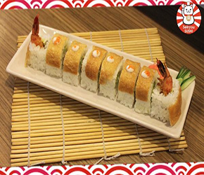
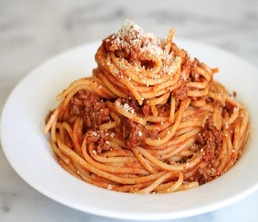
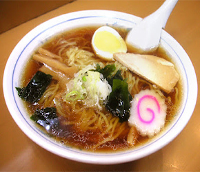
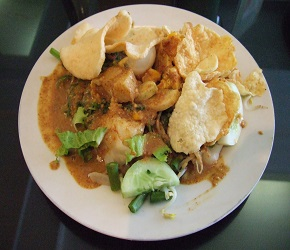

Bento panda
Bahan-bahan yang perlu kamu siapkan: Nasi putih secukupnya Rumput laut kering atau nori 3 buah sosis sapi goreng 2 lembar daun selada Tomat ceri secukupnya 1 buah kentang, potong jadi 4 dan goreng Cara membuatnya: Potong sosis menjadi 2 bagian, lalu kerat membentuk bunga, dan goreng sampai matang. Potong kentang menjadi 4 bagian dan goreng sampai matang. Cuci bersih tomat ceri dan daun selada. Kemudian, letakkan selada sebagai alas nasi. Nasi panda Lapisi tanganmu dengan kantong plastik bening. Ambil 3-4 sendok makan nasi, lalu bentuk melonjong sebesar kepalan tangan. Hias nasi dengan nori yang dibentuk menjadi mata, hidung, senyum, dan baju panda. Tambahkan 2 potong sosis di setiap nasi kepal untuk menjadi pipi panda. Setelah semua bahan bekal jadi, tatalah sesuai dengan gambar. Pastikan wajah Si Panda terlihat ya, jangan ditelungkupkan ke bawah.
Shusi Ebi Tempura Roll
Bahan: 3 buah tempura udang 30 g asparagus hijau, blansir 20 g mentimun hijau, potong memanjang 10 ml mayones botolan 100 g nasi sushi 15 ml spicy thousand island sauce Lapisan: keripik kentang memar Pelengkap: gari wasabi shoyu Cara membuat: Siapkan semua bahan-bahan. Siapkan gulungan bambu. Ratakan nasi di atasnya. Taruh tempura, mentimun, asparagus, mayones di salah satu sisinya. Gulung dengan gulungan bambu hingga padat. Taburi kelilingnya dengan keripik kentang hingga rata. Potong menjadi 6 bagian. Sajikan segera. Untuk 1 gulung @ 6 iris/potong
Spaghetti
Resep dan Cara Membuat Spaghetti Bahan Spaghetti Mie Spaghetti 250gr atau sesuai yang dibutuhkan (bisa didapatkan di supermarket terdekat) Daging giling atau sosis (di supermarket ada) Saus tomat/cabai (1 botol) Tepung Maizena (±2 sendok) 1 Siung Bawang Bombay (iris-iris setipis mungkin) 8 Bawang putih (cincang hingga halus) Keju Cheddar Mentega Minyak Goreng Bubuk Oregano (1/2 sendok) Cara Membuat Spaghetti: Pertama, rebus air 1lt hingga mendidih dan masukkan minyak goreng 2 sendok. Lalu masukkan Spaghetti, tambahkan bubuk oregano dan daging giling atau sosis. Aduk rata hingga mie mulai mengembang. Kedua, setelah mie Spaghetti matang, angkat dan tiriskan hingga airnya hilang. Ketiga, tuangkan saus kedalam wajan. Cicipi saus yang anda buat tadi hingga rasanya mantab. Keempat, masukkan mie kedalam saus yang sudah anda buat. Kelima, aduk mie Spaghetti tersebut hingga bumbu saus merata. Terakhir, sajikan dengan piring besar bersama keluarga anda.Suishi
Bahan : – 540 gram (2 1/2 cangkir) beras koshihikari – 200 gram salmon segar, potong 1 cm – 935 ml (3 3/4 cangkir) air dingin – 125 ml (1/2 cangkir) cuka beras – 2 sendok makan gula kastor – 1/2 sendok teh garam – 6 lembar nori – 1 alpukat, belah 2, kupas, iris tipis, cincang Penyajian : – Saus kedelai – Pasta wasabi – Acer jahe Wajib dicoba: Aneka Resep Nugget Cara Membuat : Taruh beras kedalam sebuah saringan, kemudian cuci beras dengan air dingin yang mengalir hingga bersih. Setelah itu taruh beras dan air ke dalam panci besar, tutup, masak dengan api besar, dan didihkan. Kecilkan api dan tutup selama 12 menit atau hingga air terserap, angkat dan sisihkan. Tutup selama 10 menit. Campur cuka, gula dan garam dalam mangkuk kecil, kemudian pindahkan nasi ke dalam mangkuk kaca besar, aduk nasi dengan menggunakan pengaduk kayu, setelah itu secara bertahap tambahkan cuka, aduk perlahan hingga rata. Tunggu selama 15 menit hingga nasi menjadi dingin. Taruh alas sushi pada telenan, tempatkan lembaran nori, bagian mengkilap menghadap ke bawah, di atas alas. Sebaiknya tangan masih dalam keadaan basah untuk menyebarkan nasi secukupnya di atas lembaran nori, sisakan 3 cm pada tiap sisinya. Taruh salmon dan alpukat pada bagian tengah nasi, tahan isian di tengah sambil menggulung alas. Lakukan cara tersebut hingga nori habis. Gunakan pisau tajam untuk memotong-motong sushi dengan tebal potongan 1,5 cm. Kemudain tarih di atas piring dengan kecap, wasabi, dan acar jahe sesuai selera.Pizza
Resep dan Cara Membuat Spaghetti Bahan Spaghetti Mie Spaghetti 250gr atau sesuai yang dibutuhkan (bisa didapatkan di supermarket terdekat) Daging giling atau sosis (di supermarket ada) Saus tomat/cabai (1 botol) Tepung Maizena (±2 sendok) 1 Siung Bawang Bombay (iris-iris setipis mungkin) 8 Bawang putih (cincang hingga halus) Keju Cheddar Mentega Minyak Goreng Bubuk Oregano (1/2 sendok) Cara Membuat Spaghetti: Pertama, rebus air 1lt hingga mendidih dan masukkan minyak goreng 2 sendok. Lalu masukkan Spaghetti, tambahkan bubuk oregano dan daging giling atau sosis. Aduk rata hingga mie mulai mengembang. Kedua, setelah mie Spaghetti matang, angkat dan tiriskan hingga airnya hilang. Ketiga, tuangkan saus kedalam wajan. Cicipi saus yang anda buat tadi hingga rasanya mantab. Keempat, masukkan mie kedalam saus yang sudah anda buat. Kelima, aduk mie Spaghetti tersebut hingga bumbu saus merata. Terakhir, sajikan dengan piring besar bersama keluarga anda.Soto Ayam
Resep dan Bahan Membuat Soto Ayam 1 ekor daging ayam 200 gram tauge / kecambah (direbus sebentar) 200 gram kol / kubis 50 gram soun (direndam dalam air air panas) 2 buah tomat 4 buah kentang (bisa direbus / digoreng) 3 buah telur rebus 2 liter air Bawang goreng secukupnya Bumbu 2 lembar daun salam 2 batang serai 1 batang daun bawang 25 gram lengkuas 2 sendok makan minyak goreng Bahan yang Dihaluskan 5 gram kunyit 15 gram jahe 3 siung bawang merah 2 siung bawang putih 4 buah kemiri 2 sendok makan garam ½ sendok teh merica Cara Membuat Soto Ayam Gurih dan Lezat Tumis bumbu yang sudah di haluskan hingga keluar aroma harum Rebus ayam di dalam panci bersamaan dengan bumbu yang telah di tumis Kemudian tambahkan lengkuas, daun salam, daun jeruk dan daun serai ke dalam rebusan ayam tadi Masak sekitar 30 menit hingga daging ayam menjadi empuk Tambahkan garam dan merica sesuai selera ke dalam kuah rebusan ayam Setelah daging ayam cukup empuk, pisahkan daging ayam tersebut dari tulangnya, lalu kembalikan tulangnya ke dalam kuah yang ada di panci Tambahkan potongan daun bawang dan tunggu hingga kuah mendidih Selama menunggu kuah mendidih. Siapkan kol, soun, tauge, irisan kentang, irisan telur, tomat dan daging ayam yang sudah di suwir ke dalam mangkuk saji Lalu setelah itu siram bahan-bahan dalam mangkuk dengan kuah soto yang sudah dimasak Untuk menghias soto ayam agar terlihat menggoda dan cantik, bisa dengan menaburkan bawang goreng serta irisan jeruk nipis di atasnya sesuai selera Anda Dan soto ayam spesial siap untuk dihidangkanPrize : Rp.7.000,-
Bento Sarang Burung
Bahan-bahan yang dibutuhkan: 1 porsi makanan olahan pasta. Kamu bisa lihat resepnya di sini 2 butir bakso sapi rebus 4 potong nugget ayam, goreng sampai matang 2 potongan bulat sosis sapi goreng Kacang polong, wortel, dan brokoli rebus secukupnya Cara membuatnya: Bakso Setelah direbus sampai matang, hias 2 butir bakso menjadi seperti kepala burung. Letakkan 2 biji wijen hitam di masing-masing bakso sebagai matanya. Kalau tidak ada, kamu bisa menggantinya dengan daun brokoli. Ambil 1 potongan bulat wortel, bagi menjadi 2, lalu bentuk menjadi huruf V. Letakkan potongan wortel ini di antara kedua "mata" sebagai paruh burung. Wortel Ambil bagian tengah dari potongan bulat setiap wortel. Dengan bantuan pisau, bentuklah bagian tersebut menjadi seperti bunga. Caranya, berilah 5 jeda kecil berbentuk huruf V di setiap potongan wortel. Sosis dan kacang polong Goreng 2 potong sosis sapi. Tiriskan sampai tidak berminyak. Tusukkan kacang polong ke bagian tengah sosis goreng. Gunakan tusuk gigi supaya lebih mudah. Kalau bakso dan wortel sudah dibentuk, kamu hanya perlu menatanya saja ke dalam kotak makan. Untuk pastanya, gunakan cetakan kue mangkuk atau muffin ya sebagai alas supaya bentuknya tetap bagus dan sausnya tidak mbleber.
Ramen
Bahan Mie Ramen : 1 siung bawang putih (cincang halus) 1 sdm tepung maizena (larutkan dengan air) 2 buah bakso sapi siap pakai (potong 4 bagian) 2 buah bakso ikan siap pakai (potong 4 bagian) 2 ekor udang besar (kupas, sisakan ekornya) 2 helai daun caisim (potong serong) 2 sdm minyak wijen 1/4 sdt jahe parut 100 gr daging ayam (potong dadu) 250 gr mie bulat siap saji 350 ml air kaldu ayam 1000 ml air untuk merebus Bumbu Mie Ramen : 1 sdt shoyu (kecap jepang) 1 sdt kecap manis 1 sdm saus sambal thailand 1 sdm minyak ikan 1/2 sat garam 1/2 sdt gula pasir Cara Membuat Mie Ramen : 1. Masukkan mi ke dalam air mendidih. Rebus sampai mengapung lalu angkat dan tiriskan. 2. Panaskan wajan yang sudah diisi minyak. Tumis bawang putih dan jahe hingga harum, lalu masukkan udang dan ayam sambil diaduk hingga berubah warnanya. 3. Masukkan air kaldu, bumbu-bumbu, bakso, dan caisim, aduk sampai mendidih. Lalu tambahkan larutan tepung maizena. 4. Setelah kuah mengental, masukkan mi, angkat dan tuangkan ke dalam mangkuk. 5. Sajikan mi ramen selagi hangat.
Gado - Gado
Bahan dan Bumbu Gado gado Spesial Bahan utama yang dibutuhkan adalah 150-200 gram tahu atau sekitar 3-4 potong ukuran besar. Sebenarnya bisa memakai tahu apa saja tapi lebih enak kalau memakai tahu putih. Tempe yang bagus dan baru sebanyak kurang lebih 150-200 gram. Gunakan tempe yang baru supaya hasilnya lebih enak. Telur ayam yang sudah direbus sebanyak kurang lebih 2-3 butir. Kupas kulitnya dan potong kecil kecil. Tauge segar dan bagus sebanyak kurang lebih 160 gram. Cuci bersih dan buang bagian bawahnya (akar) sebelum di rebus. Kacang panjang segar sebanyak 150 gram juga. Potong ujung ujungnya, cuci bersih dan potong potong kecil sepanjang kurang lebih 2-3 cm. Daun selada segar sebanyak 150-200 gram. Gunakan selada keriting dan potong kecil kecil (bisa dihilangkan kalau tidak suka). Ketimun ukuran sedang besar sebanyak 1 buah. Cuci bersih da kupas kulitnya sebelum digunakan. Pare secukupnya(kalau ada yang tidak suka pare tidak usah ditambahkan pare). Sayuran Kol sebanyak 100 gram. Cuci bersih sebelum direbus dan potong potong kecil juga. Bawang putih ukuran sedang besar sebanyak 7 pcs. 5 pcs dihaluskan untuk membuat saus kacangnya dan 2 pcs untuk celupan tahu dan tempe sebelum digoreng. Kacang tanah yang sudah di goreng sangrai sebanyak 250-280 gram. Jangan lupa buang kulitnya sebelum di tumbuk halus untuk saus kacangnya (bumbu saus kacang). Buah cabai rawit merah secukupnya. Tergantung selera, mau banyak untuk yang suka pedas atau sedikit saja untuk yang tidak suka (bumbu saus kacang). Santan sebanyak kurang lebih 500 ml. Lebih baik diambil dari perasan kelapa yang diparut supaya lebih legit (bumbu saus kacang). Air asam jawa sebanyak kirang lebih 3 sendok makan (bumbu saus kacang). Daun jeruk purut sebanyak kurang lebih 4-5 lembar (bumbu saus kacang). Gula merah yang bagus sebanyak kurang lebih 50-60 gram. Potong meyamping atau disisir supaya lebih mudah dicampur dengan bahan lain (bumbu saus kacang). Garam secukupnya untuk celupan tahu tempe dan saus kacangnya (kurang lebih masing masing butuh 1 sendok makan). Ketumbar secukupnya (kurang lebih 3/4 sendok kecil) untuk bumbu celupan tempe dan tahu. Air bersih matang secukupnya untuk mencampur saus kacang dan bumbu tempe tahunya. Minyak secukupnya. Bahan pelengkap sesuai selera, seperti bawang goreng, kerupuk udang, emping goreng, dll. Cara Membuat Resep Gado gado enak dan mudah : 1. kita akan membuat saus kacangnya dulu. Tetapi sambil menunggu saus kacangnya jadi, teman teman bisa merebus semua bahan sayurannya sampai matang atau agak matang kemudian dipotong potong sesuai selera. 2. Siapkan penggorengan dengan api kecil sedang dan beri minyak sedikit untuk menumis. 3.Masukkan bawang putih yang sudah dihaluskan, cabe rawit dan 4-5 lembar daun jeruk purutnya. Tumis dan aduk aduk sampai tercium bau harumnya. 4.Masukkan santan yang sudah disiapkan dan aduk aduk sampai tercampur sempurna dengan bumbu tumisan diatas. 5. Masukkan kacang sangrai yang sudah dihaluskan. Campur dan aduk aduk lagi sampai semua bahan tercampur rata dan santannya mendidih. 6. Langkah berikutnya masukkan air asam jawa dan gula merah yang sudah disisir halus. Aduk aduk kembali sampai semua bahan tercampur rata. 7. Masukkan garam dapur beryodium secukupnya. Aduk aduk kembali sampai aroma gula merah dan kacangnya tercampur dan tercium harum. 8. Langkah berikutnya menggoreng tahu dan tempenya. Tetapi kita bikin celupan atau rendaman buat tahu dan tempe supaya lebih gurih. 9. Haluskan bawang putih dan ketumbarnya. 10. Beri air secukupnya dan tambahkan garam dapur beryodium secukupnya. 11. Siapkan penggorengan dengan api sedang dan beri minyak secukupnya. 12. Masukkan tempe dan tahu yang sudah dicelup sebelumnya ke dalam bumbu celupan. 13. Bolak balik tahu dan tempe sampai mberwarna kecoklatan dan matang. 14. Angkat dan potong kecil kecil. 15. Ambil sayuran yang sudah matang dan dipotong potong. 16. Taruh di atas piring secukupnya. Beri sedikit tahu, tempe dan telur rebus yang sudah dipotong kemudian siram dengan saus kacangnya sesuai selera.
Nasi Goreng Seafood
Bahan-bahan yang diperlukan : 3 piring nasi putih 2 butir telur 2 ekor ikan teri, Dipotong dadu 9 ekor udang kecil, kupas kulitnya 3 ekor cumi, bersihkan semuanya, potong bentuk cincin 1 batang daun bawang, iris tipis 2 sendok makan Kecap ikan 2 sendok makan kecap manis 2 sendok makan minyak goreng 1 sendok teh margarin Bumbu nasi goreng seafood (dihaluskan) : 4 siung bawang putih 3 butir bawang merah 2 buah cabe merah garam secukupnya Pelengkap resep: Kerupuk irisan timun Saos sambal Irisan Tomat Cara membuat nasi goreng seafood : 1. Siapkan wajan dengan minyak, masukkan margarin. aduk rata hingga tercampur 2. Masukkan bumbu halus kemudian tumis sampai keluar aroma wanginya 3. Masukkan udang dan cumi, tumis sampai berubah warna menjadi kemerahan, masukkan daun bawang serta telur kemudian aduk kembali sampai semua bahan matang 4. Masukkan nasi putih lalu aduk sebentar, tambahkan kecap manis dan kecap ikan selanjutnya aduk sampai semua tercampur secara merata. Angkat 5. Sajikan di piring saji jangan lupa siapkan pelengkapnya 6. Selamat menikmati